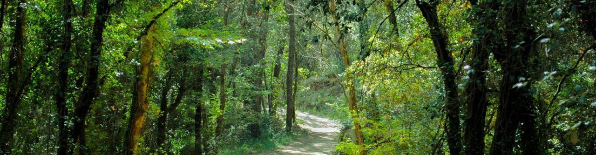

Ruta · Palautordera
Aquest itinerari és ideal per observar com és de versàtil el paisatge vegetal creant diferents hàbitats en funció de l’orientació, el sòl, la seva explotació o la disponibilitat d’aigua, entre…